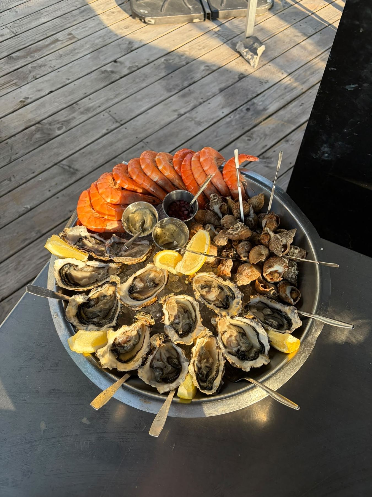

La Maison
de l'Écaille
Huîtres du bassin d'Arcachon, plateaux de fruits de mer et bons vins, au marché des Carmes à Toulouse. Sur place, à emporter, ou pour vos événements.
Le bar à huîtres du marché des Carmes
La Maison de l'Écaille propose des produits de la mer frais et de qualité, dans un lieu chaleureux, vivant et convivial. On vient déguster quelques huîtres entre deux courses, partager un plateau de fruits de mer, ou boire un verre de vin en terrasse.
« Des produits frais, des copains et une bonne ambiance. »
Découvrir notre conceptHuîtres, fruits de mer, moules & boissons
Un choix généreux, qui change selon les arrivages et les saisons.
Huîtres du bassin d'Arcachon
Dégustées seules ou en plateau, ouvertes à la commande.
Plateaux à partager
Petit plateau, grand plateau, prestige ou dégustation.
Vins & boissons
Blancs, rosés, rouges, bières et softs artisanaux.
Fraîcheur, qualité, convivialité
Une adresse qualitative mais accessible, élégante sans être guindée.
« On ouvre les huîtres, vous ouvrez les bouteilles ! »
La Maison de l'ÉcailleNous trouver
- Adresse
- Marché des Carmes, Place des Carmes, 31000 Toulouse
- Horaires
- Mardi – Samedi : 11h30 – 15h & 18h30 – 22h30
Dimanche – Lundi : fermé - Téléphone
- 05 61 00 00 00